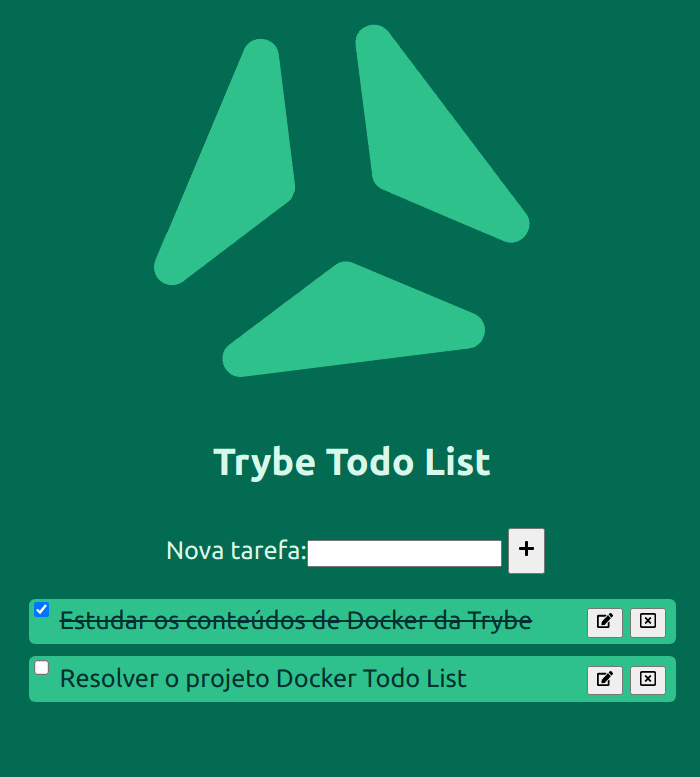

Olá! Esse é o aplicativo de tarefas Trybe Todo-App!
Com ele, você pode se organizar de maneira simples, adicionando, marcando e/ou removendo suas tarefas.
Uma verdadeira mão-na-roda para acompanhar seu progresso!

create-react-app requerem essa versão mínima para funcionar corretamenteEsse é um aplicativo em NodeJS, que possui dois componentes principais (front e back) e um teste de saúde da aplicação:
Front-end Essa aplicação consome nossa API e nos retorna nossa lista;Back-end Onde a mágica acontece! Nosso back-end possui um banco de dados interno, onde são salvas nossas tarefas;Testes Onde validamos a comunicação entre front e back-end.todo-app/
├── README.md # este arquivo
├── intro.gif # demonstração
├── back-end # responsável por processar nossos dados através de requisições
│ ├── node_modules.tar.gz # pacote opcional, para facilitar a criação de imagens no Docker
│ ├── package.json # principal componente da aplicação
│ ├── package-lock.json # arquivo responsável por otimizar a instalação em outros ambientes
│ └── src
│ ├── api
│ │ ├── routes.js
│ │ └── server.js
│ ├── controllers
│ │ └── Tasks.js
│ ├── database
│ │ ├── tasks.bkp.json
│ │ └── tasks.json
│ ├── models
│ │ └── Tasks.js
│ └── utils
│ └── fileHandler.js
├── front-end # responsável por ser uma interface amigável para nosso back-end
│ ├── node_modules.tar.gz # pacote opcional, para facilitar a criação de imagens no Docker
│ ├── package.json # principal componente da aplicação
│ ├── package-lock.json # arquivo responsável por otimizar a instalação em outros ambientes
│ ├── public
│ │ ├── favicon.ico
│ │ ├── index.html
│ │ ├── logo192.png
│ │ ├── logo512.png
│ │ ├── manifest.json
│ │ └── robots.txt
│ ├── README.md
│ └── src
│ ├── App.css
│ ├── App.js
│ ├── App.test.js
│ ├── components
│ │ ├── ItemAdd
│ │ │ ├── index.jsx
│ │ │ └── styles.css
│ │ ├── ItemList
│ │ │ ├── index.jsx
│ │ │ └── styles.css
│ │ ├── ItemRow
│ │ │ ├── index.jsx
│ │ │ └── styles.css
│ │ └── TaskReset
│ │ └── index.jsx
│ ├── context
│ │ └── taskContext.js
│ ├── index.css
│ ├── index.js
│ ├── logo.png
│ ├── reportWebVitals.js
│ ├── setupTests.js
│ └── utils
│ └── fetch.js
└── tests # responsável por validar essa comunicação
├── e2e
│ └── health_status.test.js
├── jest.config.js
├── node_modules.tar.gz # pacote opcional, para facilitar a criação de imagens no Docker
├── package.json # principal componente da aplicação
└── package-lock.json # arquivo responsável por otimizar a instalação em outros ambientes
Como o back-end é o coração 💚 dessa aplicação, é possível utilizar ele sem um Front-end, nesse caso, é possível consumi-lo através de requisições REST, através de seu aplicativo de requisições favorito, como Postman, Insomnia, HTTPie, etc!
O front-end, por outro lado, dá uma cara mais elegante 🌟 para nosso app, e é preferencialmente recomendado para consumo do nosso back-end!
front funcione, ele precisa de uma API para consumir - papel do nosso back-end../todo-app/back-end;npm install;Warns (Avisos) não impedem seu funcionamento;npm start;3001;./todo-app/front-end;npm install;Warns (Avisos) não impedem seu funcionamento;npm start;.env, já contido em sua pasta no repositório;3000;back-end:
REACT_APP_API_HOST: padrão localhost;
back-end;REACT_APP_API_PORT: padrão 3001.
back-end;./todo-app/tests;npm install;Warns (Avisos) não impedem seu funcionamento;npm test;FRONT_HOST: padrão localhost;
front-end;FRONT_PORT: padrão 3000.
front-end;⚠️ Aplicações NodeJS, necessitam de algumas coisas para funcionar:
package.json, que provê informações e scripts de inicialização para a aplicação, esse arquivo é obrigatório no funcionamento e deve estar no container do app referido;package-lock.json, que provê um “cache” de pacotes, necessários a aplicação, esse arquivo não precisa ser copiado para o container, mas ele precisa existir para a aplicação funcionar, ou seja, caso ele não exista no container, você precisará instalar a aplicação NodeJS, dentro do container, obrigatoriamente;node_modules, que é criada (ou aproveitada, caso já exista) durante a instalação - que é obrigatória - no container;source, src) e complementares (por exemplo public, .env*), esses arquivos são da aplicação propriamente dita e devem estar no container, caso não estejamos trabalhando apenas com builds ou compilações desses aplicativos (que podem ter funcionamento diferente).node_modules.tar.gzAplicações NodeJS, durante suas respectivas instalações, geram uma pasta nomeada como node_modules, que contém tudo o que a aplicação precisa pra funcionar.
Esse repositório já prove em cada serviço, um pacote compactado contendo essas dependências, chamado node_modules.tar.gz.
Dessa forma, em um Dockerfile, é possível aproveitar esse recurso para adicionar esse pacote à imagem, lembrando aqui, que o comando ADD do Dockerfile, além de adicionar arquivos, também faz a extração de pacotes, como nesse caso.
Caso você opte por utilizar esse recurso, o build de suas imagens levará menos tempo, já que, nesse caso, a instalação será mais rápida, aproveitando esses recursos.